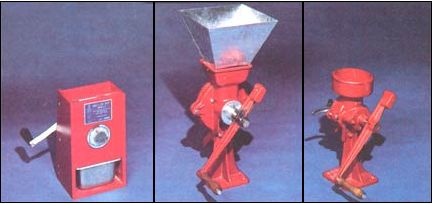
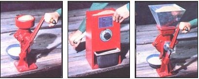
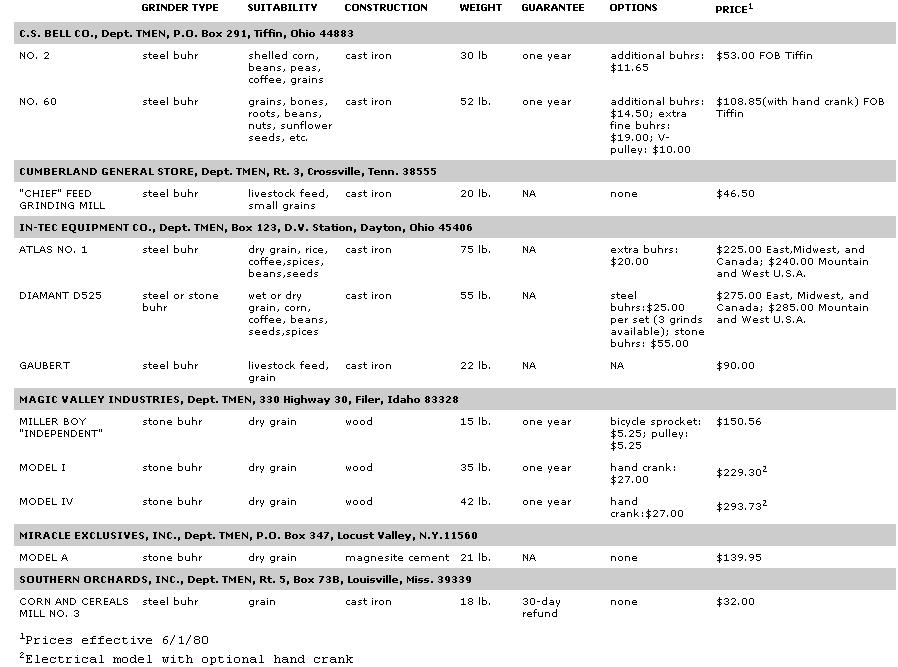

Your entire family could most likely to be eating fresher, tastier, more healthful foods - and saving money at the same time
- if you acquired one of these . . .
The advantages of grinding your own flour, cereal, nut butters, bone meal, and so forth are relatively well known. By preparing such foodstuffs right before you intend to consume them, you can be sure that you're serving your family nothing but the freshest digestibles. And besides enjoying the great taste and nutrition of recently processed food, you can also realize significant savings by buying in bulk!
HAND MILLS
When conjuring up an image of a homesized grain mill, most folks probably think of the now commonly available electrical food processors, but the fact is that there are still a number of quality handcranked grinders on the market . . . and their merits are definitely worth studying. For example, many nutrition experts now believe that high temperatures, which are part and parcel of the high speeds common to most electric mills, can damage the germ in wheat and may also affect the taste of the flour.
In addition, there's the obvious (and significant) energy saving obtained by using an arm-powered grinder. (Be aware, however, that grinding by hand is hard work! You should plan on as much as 15 minutes of cranking for each pound of bread-ready flour you'll need.)
TWO TYPES
Most home-sized mills use one of two basic grinding methods, and each design has its advantages and disadvantages.
Stone buhr mills are preferred for preparing the finest pastry flours, and can produce high-grade grinds on the first run. The stones used are, most often, manufactured - by mixing naturally occurring rock in a matrix - and though they are costly, such "grinders" wear very well. However, few stone mills can accept wet or oily materials without clogging up . . . and the devices cannot be washed with soap and water. (A gummed stone must be cleaned by running a batch of dry, heavy material - such as popping corn - through the mill.) Finally, while stone-equipped processors generally take longer to grind a given amount of grain, they don't require that the flour be rerun or that the end product be sifted . . . as is often the case with steel buhr mills.
Nonetheless, with recent advances in metallurgy, many millmakers have converted to steel buhrs . . . because the metal "stones" are relatively inexpensive to produce and able to process a variety of different substances. Steel has the capability - in many cases - of effectively grinding such substances as bone, roots, and oily beans and peas that a stone mill couldn't touch. As mentioned before, a steel buhr mill is not considered the ideal machine for producing high-grade flour, but the metal grinders do have one exclusive use: as tools to prepare livestock feed (particularly chicken scratch). Two of the gristmills listed on the accompanying chart are specifically recommended for such an application.
In general, the handcranked grain mills are manufactured by small, dedicated, and (in many instances) family-operated businesses. On the average, the products appear to be of very high quality, and with the help of the chart - and an examination of your grinding needs - you should be able to find and purchase a mill that will help provide your family with fresh foods for decades to come!
|
STAFF PHOTOS Three grind nice |
 Handcranked grain mills offer you freedom from both overprocessed flours and the electric company. And you'll appreciate the wholesome edibles that will grace your table. FROM LEFT TO RIGHT are shown three approaches to home milling: C.S. Bell's smallest steel buhr mill, the No. 2 . . . and Bell's larger version (cranked by hand or powered by a motor), the No. 60, for farm-scale operations. |
 |
|
 |
|
|